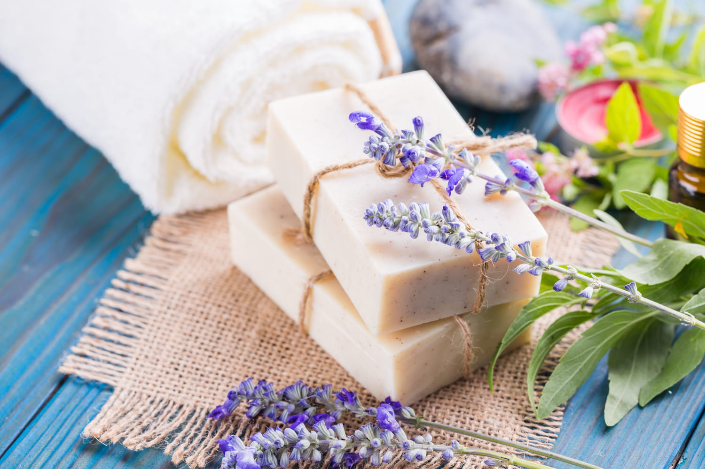
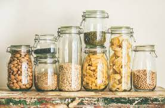

-Choisir un fournisseur electricite verte
-Reparer son materiel menager regulierement
-Isoler son logement efficacement
-Prendre des doucges froides

-Savon solide
-Utiliser une gourde
-Se deplacer a velo ou en transport en commun

-Acheter local
-Acheter en vrac
-Adopter des poules
-Reduire la consommation de viande
-Recycler ses vetements et achter de la seconde main